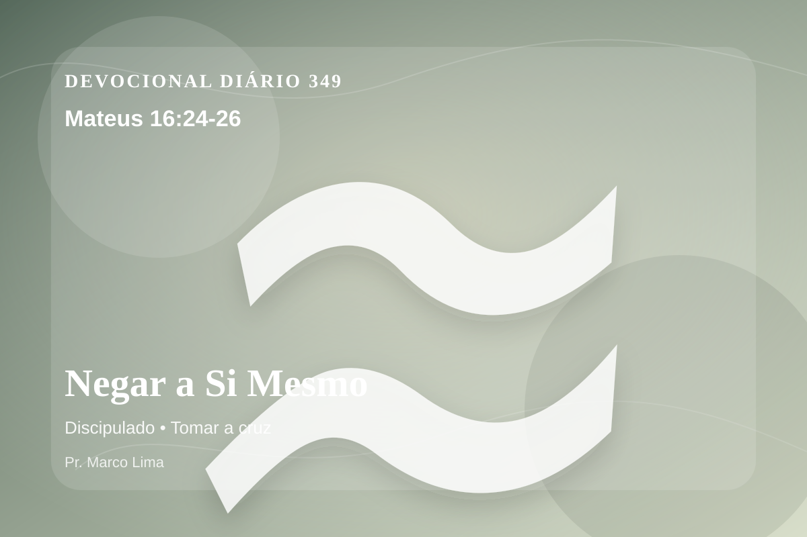

Negar a Si Mesmo
Então disse Jesus aos seus discípulos: Se alguém quer vir após mim, negue-se a si mesmo, tome a sua cruz, e siga-me; pois, quem quiser salvar a sua vida perdê-la-á; mas quem perder a sua vida por amor de mim, achá-la-á. Pois que aproveita ao homem se ganhar o mundo inteiro e perder a sua vida? ou que dará o homem em troca da sua vida?
Reflexão
Mateus 16:24-26 nos coloca diante de uma verdade simples e profunda: Deus fala para salvar, corrigir e conduzir o coração de volta a Ele. No dia 349 do plano anual, o tema de discipulado deve levar você a olhar para Cristo, não apenas para si mesmo. Este tema aponta para a maneira como Deus forma o coração do Seu povo por meio da Palavra. A aplicação correta não nasce de frases soltas, mas de uma leitura reverente, contextual e obediente do texto bíblico.
O ensinamento principal é que discipulado não pode ser separado do evangelho. Sem Cristo, até as melhores intenções continuam marcadas pelo pecado; com Cristo, a graça alcança, perdoa e transforma. A reflexão cristã não termina em pensamento positivo; ela conduz ao Senhorio de Jesus, à cruz, à ressurreição e à nova vida que o Espírito Santo produz no coração.
Aprenda esta verdade com simplicidade: Deus não veio apenas ajustar alguns hábitos, mas resgatar a pessoa inteira. O pecado separa, engana e endurece; a graça de Cristo perdoa, reconcilia e ensina um novo caminho. Quem crê em Jesus não recebe licença para continuar igual, mas poder para nascer de novo e viver como filho de Deus.
Este é o evangelho: a salvação não nasce do desempenho humano, mas da obra perfeita de Cristo. Ele tomou sobre Si a culpa do pecado, venceu a morte e chama cada pessoa a responder com arrependimento e fé.
Por isso, examine sua vida com sinceridade. Há pecados escondidos, orgulho, frieza espiritual, incredulidade ou desobediência que precisam ser confessados hoje? Arrependimento não é medo religioso; é voltar para Deus, abandonar o caminho errado e confiar na misericórdia de Jesus.
O evangelho é simples: Jesus Cristo morreu na cruz pelos nossos pecados, ressuscitou ao terceiro dia e oferece salvação a todo aquele que crê. Receba esse convite com fé, renda-se a Ele e comece hoje uma caminhada de obediência.
Aplicação Prática
- Leia Mateus 16:24-26 lentamente e destaque uma palavra ou expressão central do texto.
- Confesse a Deus um pecado, resistência ou frieza espiritual que esta Palavra revelou.
- Declare sua fé em Jesus Cristo e pratique hoje uma atitude concreta de arrependimento e obediência.
Para Orar
Senhor Deus, eu recebo a Tua Palavra em Mateus 16:24-26 com reverência. Reconheço que preciso de arrependimento, perdão e nova vida. Creio que Jesus Cristo morreu pelos meus pecados e ressuscitou para me salvar. Lava meu coração, governa minha vida e conduz-me em obediência simples ao Teu evangelho. Em nome de Jesus. Amém.
{kind=link}